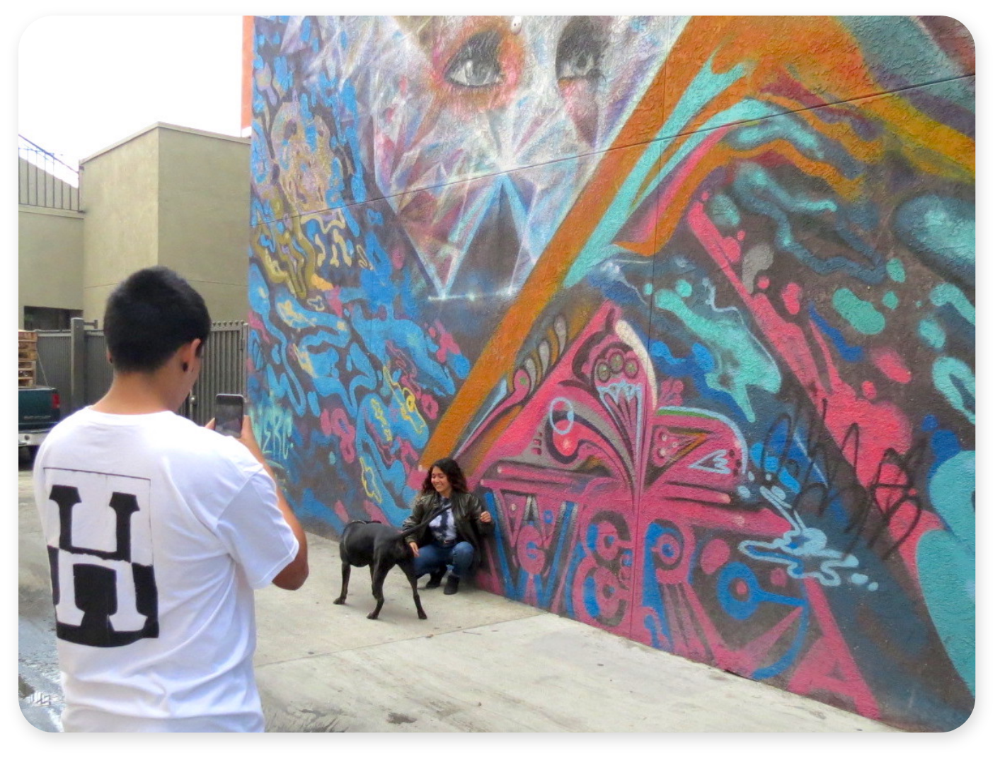
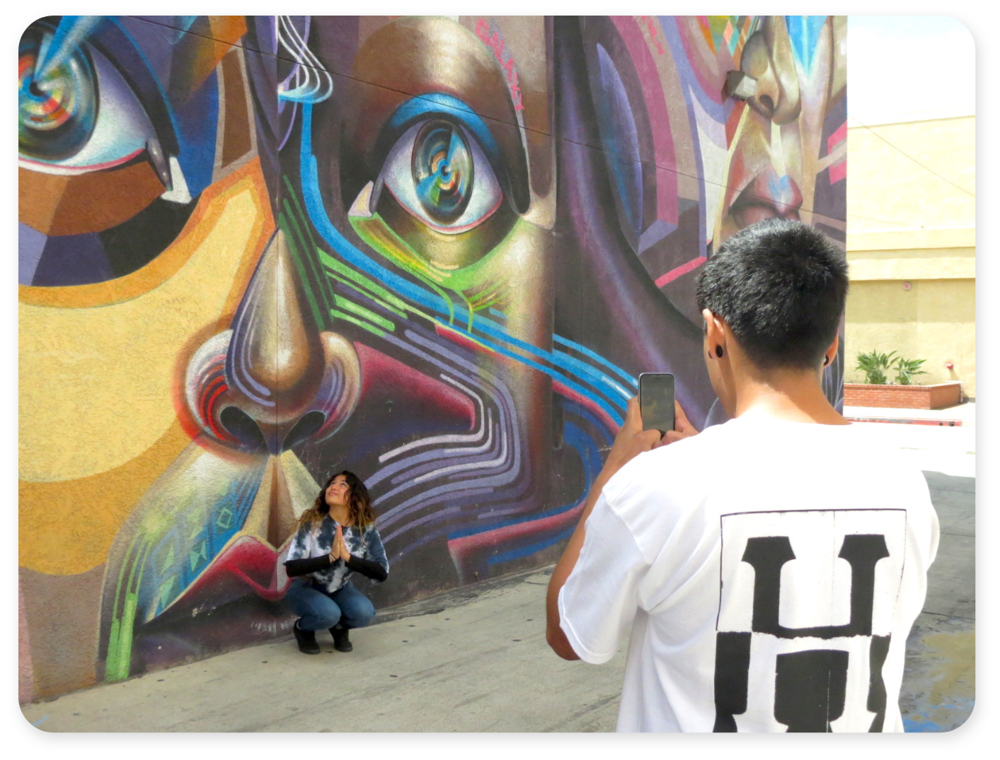
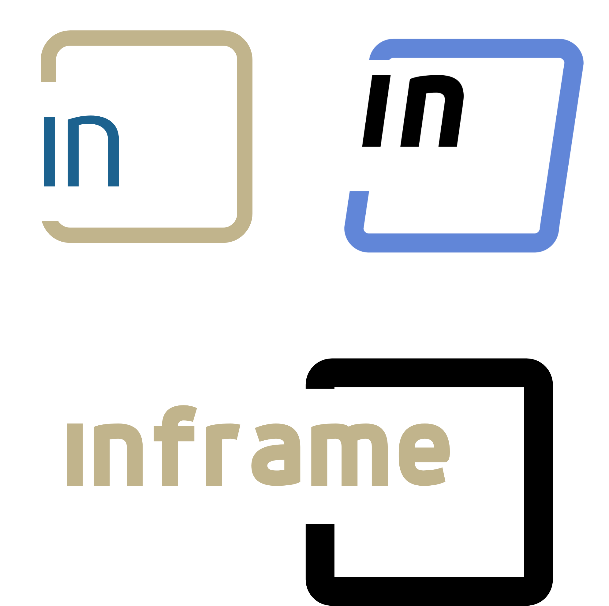

Inframe Branding

Inframe is a marketplace for a community of people who want to purchase products personalized by artists, subjects of artworks, and through collaborations.
My Roles
Brand Strategist, Graphic Designer, Responsive Website Designer
Brand Promise
Inspired by my love for art, and the intention to generate income collaborating with peers across different mediums.
Objective
To design flexible branding for an online marketplace where artists, and subjects of artwork can sell products, featuring their art directly to users.
Outcome
The brand is flexible enough to represent any genre, or medium of artwork, and connects a global community of artists, subjects, and users together, to facilitate new collaborations.
Target Audience
Artists, Public Figures, Mid-High Income, Urban
Audience Needs
Custormers are seeking for products personalized by a known public figure, or artwork from a specific artist.



Challenge
Finding a way to directly illustrate Inframes collaborative community and the variety of people who are apart of it.
Solution
To illustrate the variety of people apart of the brand I designed a mark with a few simple elements, and used these different graphic elements from the mark to represent the collaborative community that makes up the brand.
Story
I was inspired to create this project, because I see a need for artist to be able to collaborate with subjects who have large followings, and vice versa, and for people to receive personalized products from public figures they follow. I created a brand that represents a innovative community of artists, and subjects.
Sketches

Mark Iterations

Design Process
I started this project with the idea of collaboration and a few sketches incorporating slants, this developed into using an italic font. The name, inframe, was chosen from a group of names I brainstormed, it highlights the collaboration between the artist and the subject. The tagline, “support what’s inside,” represents the artists cupporting the subjects with artistic representaion, and the user as well, inviting them to support the platforms collaborations. I proceeded to sketch and develop the mark and used a slanted box to literally represent the frame and match with the italic text.
Using the mark, I prototyped the stationary, while continuing to refine the mark. With the mark and stationary complete I wireframed layouts of the mobile and desktop pages. During this time I experimented with the brands colors as well. I decided on a three color scheme to improve the contrast of different elements in the logo and in my layouts. I finished refining the desktop and app pages and created a style guide using the elements from the stationary and web collateral.
Fonts & Color

Dyno bold is a clean, bold, and san serif font which attracts inframe’s sophisticated, user- friendly, and innovative audience. The italics convey movement which resonates with the younger audience we aim to attract as well.

Exo 2 contrasts dyno sans because it is thinner, and more ornate. This contrast brings more sophistication to the wordmark by adding variety, in addition Exo 2 is often used in all caps and with extra tracking to add even more contrast.
Brown represents the envirornments where artwork is made and artist subjects live. The tan represents the frame. Light blue represents the subjects, and bright green represents the artists.
Final Deliverables